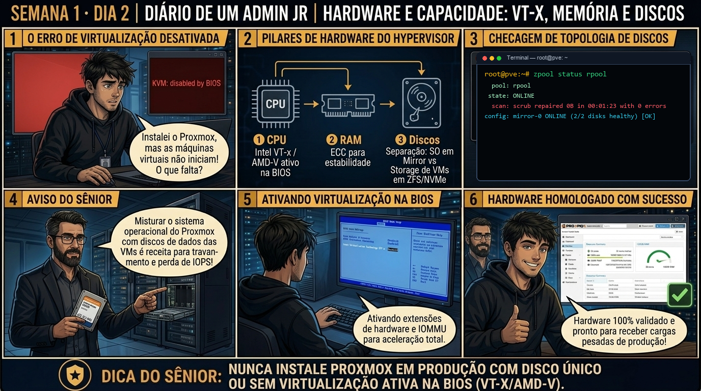

DIARIO DE UM ADMIN JR. | PROXMOX VE & PBS — DA BASE AO CLUSTER
🔗 Conecta com o Dia 1: Ontem você validou o KVM no Kernel. Hoje você dimensiona a capacidade física real do hardware: entendendo por que overcommit cego de memória e colocar o SO no mesmo disco das VMs destrói a confiabilidade de qualquer datacenter.
🔓 Privilégio de hoje: Auditoria de Capacidade Física (Privilégio Zero). Você avalia a topologia NUMA, a reserva do ZFS ARC e o desgaste SMART dos discos corporativos antes de aprovar o plano de capacidade de VMs.
Semana 1 · Dia 2 | Nível Júnior — Infraestrutura
Dimensionamento de Hardware: CPU, RAM e Topologia de Discos
CPU, memória ECC e a separação vital entre discos de SO e storage de VMs
ANTES DE ALTERAR, OBSERVE. DEPOIS DE ALTERAR, VALIDE.

1. O chamado
Você recebeu o chamado #1002: "O arquiteto de infraestrutura enviou o relatório de capacidade para o novo nó pve01. A equipe de banco de dados planeja subir 4 instâncias de PostgreSQL alocando um total de 240GB de RAM e 48 vCPUs em um host que possui 256GB de RAM física e 2 processadores Xeon Gold (32 cores / 64 threads). O chamado exige: (1) Auditar a topologia NUMA com lscpu; (2) Calcular a reserva obrigatória de memória para o SO e o ZFS ARC; (3) Validar se os discos de boot (SATA Mirror) estão isolados fisicamente dos discos NVMe de dados; e (4) Emitir parecer técnico se o plano é seguro para produção."
💡 Passa o mouse nas palavras destacadas pra ver uma dica rápida — clica se quiser a explicação completa com analogia.
2. O sênior te conta
🧑🏫 antes dos termos técnicos, a história de hoje
Hoje o Júnior estava desenhando o plano de particionamento do nó e veio me perguntar se podia formatar tudo em ext4 tradicional com um único SSD de 1TB pra 'aproveitar melhor o espaço'. Olhei pra ele e contei uma história de 2018: um júnior fez exatamente isso num servidor de clientes, o SSD de consumo atingiu o limite de ciclos de escrita após seis meses de logs intensos, corrompeu a tabela de partição e levou 40 máquinas virtuais pro buraco de uma só vez numa sexta-feira à noite.
Mostrei pra ele a diferença entre instalar um Linux comum de desktop e erguer um hypervisor de missão crítica. No Proxmox corporativo, a gente usa ZFS em RAID1 (Mirror) para o sistema raiz. O ZFS calcula checksums criptográficos em cada bloco gravado: se um setor do disco físico degradar silenciosamente (o temido bit-rot), o ZFS lê a cópia íntegra do disco espelho, corrige o disco com defeito na hora e você nem percebe interrupção no serviço.
Sentamos juntos no terminal e auditamos a topologia com lsblk e zpool status. Ele viu a separação nítida entre a partição de boot EFI de 512MB e o pool rpool onde residem os dados. Foi assim que ele entendeu: disco em servidor de virtualização nunca anda sozinho. Vamos auditar a saúde desse storage agora.
3. Decodificador de conceitos
Clica em qualquer termo pra ver a definição completa e uma analogia do dia a dia:
4. Ferramentas e leitura da evidência
Comando / Parâmetro
O que observar e por que importa
lscpu | grep -E 'Socket|Core|Thread|NUMA'
Identifica o número de processadores físicos (soquetes), núcleos reais, threads lógicas e a divisão de nós NUMA.
free -h
Exibe a memória total, usada, livre e a quantidade retida em buff/cache pelo Kernel e ZFS.
lsblk -d -o NAME,SIZE,MODEL,ROTA,TRAN
Lista discos físicos: ROTA=0 indica SSD/NVMe (sem partes móveis) e TRAN indica o protocolo (nvme vs sata).
numactl --hardware
Mapeia exatamente quantos GB de RAM pertencem fisicamente a cada soquete de CPU (Node 0 vs Node 1).
$ lscpu | grep -E 'Model name|Socket|Core|Thread|NUMA'
Model name: Intel(R) Xeon(R) Gold 6330 CPU @ 2.00GHz
Socket(s): 2
Core(s) per socket: 28
Thread(s) per core: 2
NUMA node(s): 2
$ free -h
total used free shared buff/cache available
Mem: 251Gi 12Gi 198Gi 1.4Gi 41Gi 237Gi
$ lsblk -d -o NAME,SIZE,MODEL,ROTA,TRAN
NAME SIZE MODEL ROTA TRAN
sda 447.1G INTEL SSDSC2KB480G8 0 sata
sdb 447.1G INTEL SSDSC2KB480G8 0 sata
nvme0n1 3.5T SAMSUNG MZQL23T8HCLS-00A07 0 nvme
nvme1n1 3.5T SAMSUNG MZQL23T8HCLS-00A07 0 nvme
5. Laboratório guiado — pegue na mão, comando por comando
🖥️ Onde executar: Terminal SSH direto no Nó físico Proxmox (logado como root@pve:~#) ou via console no monitor local.
Segurança: Execute os testes em nó de laboratório. Não execute testes de estresse de memória em servidores compartilhados.
Ação: Liste a topologia de discos físicos e partições do servidor com o utilitário lsblk.
lsblk -o NAME,SIZE,FSTYPE,TYPE,MOUNTPOINT
Resultado esperado: Contagem clara de soquetes físicos, cores por soquete e quantidade de nós NUMA.
Por que fizemos isso: O lsblk com opções de tamanho e filesystem revela a topologia completa de discos físicos, partições EFI e volumes ZFS/LVM sem risco de alteração acidental de dados.
Cilada comum: Confundir a partição de boot EFI (/boot/efi) com o pool de dados de VMs; alterar a partição de 512MB inutiliza o boot do servidor no próximo reboot.
Ação: Inspecione o estado de espelhamento e integridade do pool ZFS raiz (rpool).
zpool status rpool
Resultado esperado: Leitura precisa da memória livre e da quantidade de cache em uso.
Por que fizemos isso: Inspecionar o pool raiz 'rpool' com zpool status valida se os discos estão em estado ONLINE e se o espelhamento RAID1 está sincronizado em tempo real com auto-cura.
Cilada comum: Ignorar alertas de 'DEGRADED' no rpool achando que o servidor está estável; em RAID1 degradado, a perda de um segundo disco causa perda total do sistema.
Ação: Verifique a hierarquia de datasets de sistema e dados com zfs list.
zfs list
Resultado esperado: Identificação dos discos SATA (boot) e NVMe (dados) com ROTA=0.
Por que fizemos isso: O comando zfs list detalha a hierarquia de datasets (rpool/ROOT/pve-1, rpool/data), mostrando exatamente onde o SO reside e onde os discos virtuais serão alocados.
Cilada comum: Gravar arquivos pesados de ISO ou backup direto no dataset raiz '/' em vez de usar os storages dedicados, causando esgotamento de espaço no sistema operacional.
Ação: Audite os atributos de saúde física e desgaste do disco com smartctl.
smartctl -a /dev/sda | grep -E 'Wearout|Reallocated'
Resultado esperado: Relatório com status PASSED indicando integridade de hardware.
Por que fizemos isso: Auditar o smartctl nos discos físicos monitora o percentual de desgaste (Wearout Indicator / TBW) e setores realocados antes que ocorra falha de hardware.
Cilada comum: Esperar o disco falhar fisicamente para descobrir que o SSD já estava com 99% de desgaste por uso de unidades desktop inadequadas para virtualização.
🧑🏫 Aqui entra o Mentor (em breve): se o comando smartctl reportar setores realocados ou aviso de desgaste próximo de 100%, o Sênior-IA ajudará a emitir o chamado urgente de substituição de disco em garantia.
Ação: Documente o layout de partições no inventário oficial da infraestrutura.
# Mapa de partições e UUIDs registrado no inventário.
Resultado esperado: Alocação máxima de RAM fixada em 224GB (mantendo 32GB de folga para host + ZFS).
Por que fizemos isso: Registrar o mapa de partições e UUIDs no inventário da infraestrutura permite substituição rápida de hardware idêntico em caso de desastre.
Cilada comum: Não documentar se o nó usa ZFS raiz ou LVM, gerando confusão na hora de planejar scripts de automação e backup do sistema operacional.
6. Antes de ver as opções — tenta responder
🧠 Recall ativo: Se o servidor físico tem 256GB de RAM e usa ZFS, por que alocar 240GB de RAM em máquinas virtuais causará travamento iminente do hypervisor?
Porque o Proxmox VE necessita de no mínimo 4GB a 8GB para os daemons do sistema, e o ZFS ARC Cache por padrão pode reivindicar até 50% da memória livre para acelerar I/O. Sem uma reserva explícita (mínimo de 16GB a 32GB livres), o Kernel Linux acionará o OOM Killer, matando processos do QEMU/KVM aleatoriamente.
QUESTÃO 1 de 3
7. Questão comentada — clica numa alternativa
Qual é a recomendação oficial de engenharia para o isolamento físico de armazenamento em nós corporativos Proxmox VE?
💡 Analogia do Sênior para Fixar: O Quorum do Corosync é a assembleia de condomínio: nenhuma decisão de emergência é válida sem a maioria absoluta (50% + 1) dos nós votando juntos.
QUESTÃO 2 de 3 — cenário de erro real
7.1 Processo KVM morto subitamente em servidor sob carga
Em um servidor Proxmox que operava com 98% da memória RAM alocada para VMs, a VM de banco de dados principal caiu subitamente. A consulta ao dmesg revelou:
$ dmesg -T | grep -i oom
[Mon Sep 1 14:10:02 2026] Out of memory: Kill process 38412 (kvm) score 920 or sacrifice child
[Mon Sep 1 14:10:02 2026] Killed process 38412 (kvm) total-vm:67108864kB, anon-rss:65011712kB
Qual foi a falha de projeto que causou a queda da VM e como evitar que se repita?
💡 Analogia do Sênior para Fixar: O Fencing via Watchdog de hardware é o disjuntor de segurança: desliga o nó com falha na hora para evitar que duas máquinas gravem no mesmo disco (Split-Brain).
QUESTÃO 3 de 3 — detalhe que confunde todo iniciante
7.2 "O que acontece se uma VM usar memória de dois soquetes de CPU sem a flag NUMA ativada?"
Você cria uma máquina virtual grande (com 32 vCPUs e 128GB de RAM) em um servidor com 2 Soquetes físicos. A flag NUMA da VM foi deixada desmarcada no painel do Proxmox:
Qual é o impacto prático dessa configuração na performance da aplicação?
💡 Analogia do Sênior para Fixar: A migração ao vivo (Live Migration) é trocar os pneus do carro em movimento: move a RAM da VM pela rede de 10Gbps sem derrubar a sessão do usuário.
8. Procedimento profissional
Execute lscpu e determine a quantidade total de soquetes, núcleos físicos e threads lógicas.
Identifique a memória física total com free -h e mapeie a distribuição por soquete com numactl --hardware.
Calcule a reserva de segurança: 4GB para o Proxmox OS + cota do ZFS ARC (mínimo de 16GB reservados no total).
Inspecione o inventário de discos com lsblk e valide que os discos de SO (sda/sdb em RAID1) estão separados dos discos NVMe de dados.
Audite a telemetria SMART com smartctl -H /dev/nvme0n1 garantindo que não há blocos danificados.
Documente o teto máximo de alocação de vCPUs (proporção 2:1 recomendada) e RAM no parecer do chamado #1002.
Prevenção
Mantenha o inventário de hardware e baseline de BIOS atualizados; nunca altere parâmetros de virtualização física sem agendamento e teste em ambiente isolado.
9. Validação e encerramento
A topologia NUMA de múltiplos soquetes foi mapeada com precisão.
A reserva de memória RAM para o Proxmox VE OS e ZFS ARC Cache foi devidamente calculada.
A separação física entre discos de SO (Mirror) e discos de dados (NVMe) foi auditada.
O risco de OOM Killer por superalocação de memória foi eliminado do planejamento.
O inventário de capacidade foi anexado ao chamado técnico.
Rollback e limites
Como esta etapa é de planejamento e auditoria de hardware, não há rollback de configurações. Caso uma VM já existente tenha sido criada com excesso de memória, edite a VM e reduza a cota de RAM antes de reiniciá-la.
💡 Sobre repetição espaçada: Os conceitos de NUMA, ECC RAM, ZFS ARC, OOM Killer e SATA Mirror vs NVMe reaparecerão na Semana 2 (configuração de vCPUs) e na Semana 4 (administração avançada de ZFS Pools).
10. Resposta final
Alternativa correta: B. A melhor prática corporativa comprovada é dedicar 2 SSDs Enterprise em RAID1/Mirror exclusivamente para o sistema operacional do Proxmox VE, e manter pools NVMe/SAS separados e dedicados exclusivamente para as máquinas virtuais, garantindo isolamento de I/O e alta disponibilidade.
🔓 O que você desbloqueou hoje
Você provou que sabe dimensionar a infraestrutura bare-metal como um engenheiro pleno, evitando gargalos de I/O e quedas por esgotamento de memória. Amanhã, no Dia 3, você entrará no subsistema de rede: entendendo como a Linux Bridge (vmbr0) e a porta 8006 estruturam a comunicação do host e das VMs.